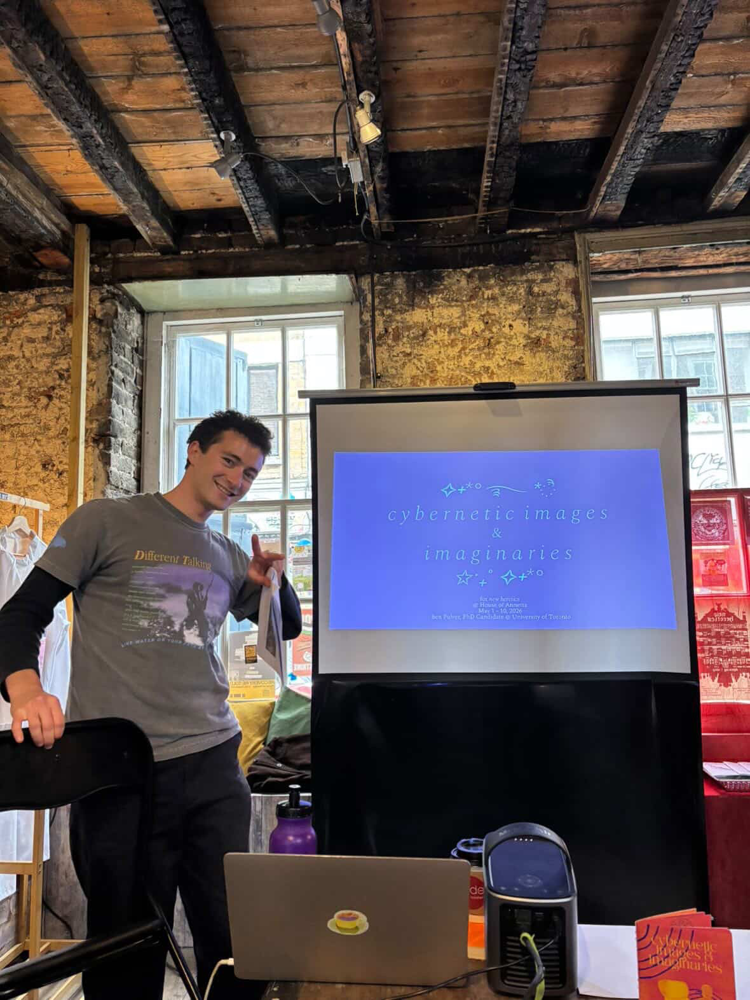
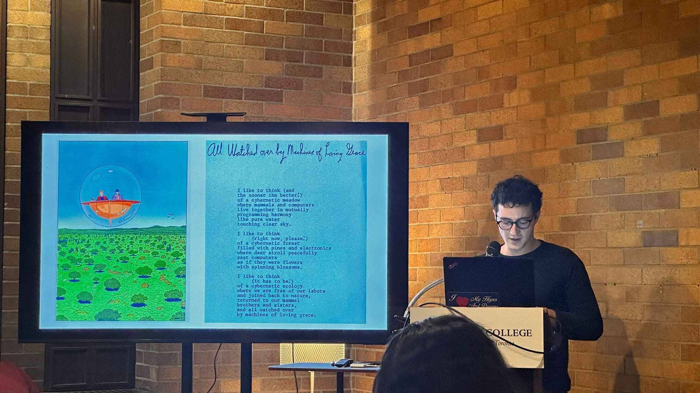
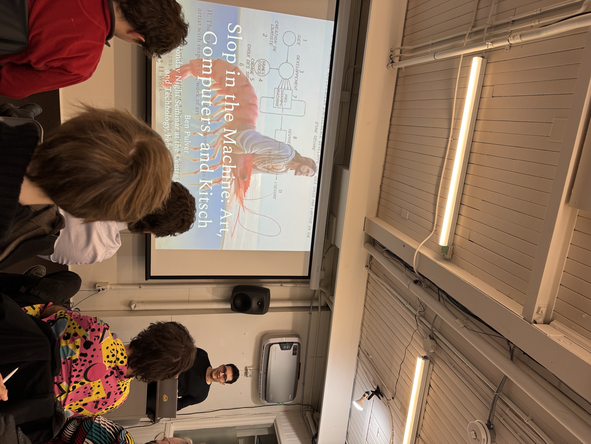
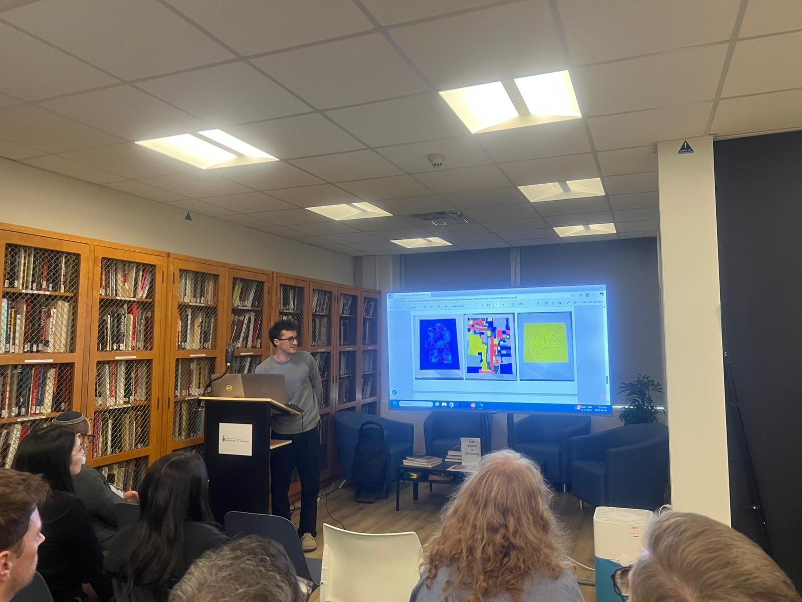
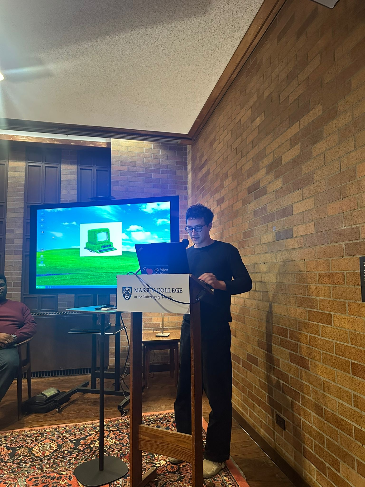
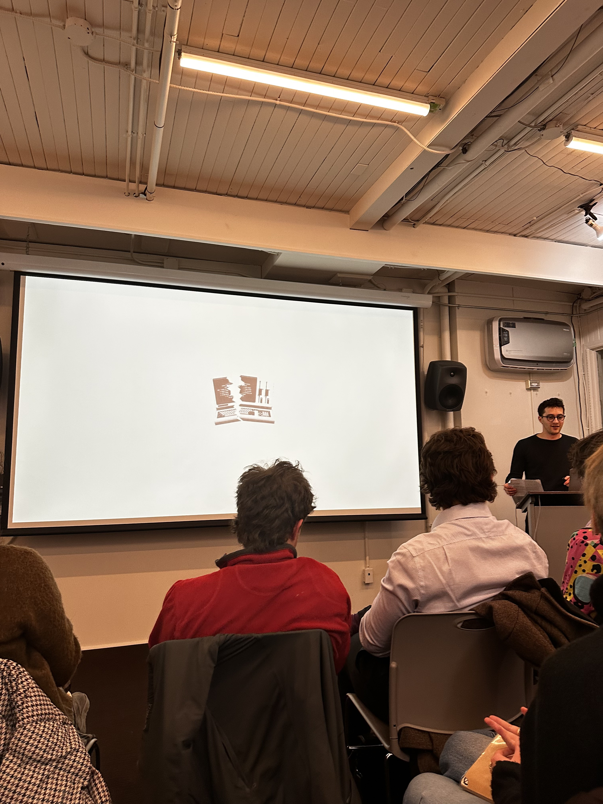

Researcher · Artist · Writer
Art and cybernetics in France, 1968–1985. Traces an ‘aesthetics of dysfunction’ mapped onto two dimensions: explicit protest and sabotage against the cybernetic regime of control, and the implicit, often spectral condition of cybernetic and computer art that reveals a fundamental motivation of mitigating disorder.
Cybernetics. Art. Computer art. AI slop. Creativity and cognition. Information aesthetics.
Letterpress printing apprenticeship at Massey College Print Studio — 19th century techniques in conversation with contemporary typing practices. Digital artwork, poetry, short stories, and a podcast on The JCR (Massey).

In that timeline I trace an emergent condition I name an ‘aesthetics of dysfunction’ which can be mapped onto two dimensions of ‘dysfunction’ in response to cybernetics: 1) the explicit protest and sabotage against the cybernetic regime of control and order; and 2) the implicit, often spectral condition of cybernetic and computer art and telematics that while seeking formal qualities of control and function reveal their fundamental motivation of mitigating disorder and dysfunction.
Recently, I self-published a zine and gave a performance lecture at an art exhibition at the House of Annetta in London, England titled New Heretics — the zine and the talk were titled Cybernetic Images and Imaginaries and investigated a speculative visual archive to think about how the capacious and multivalent ideas of cybernetics and artificial intelligence have found figures and form.
Alongside my research practice, I also maintain a dynamic mixed media art practice. I have been a printing apprentice at Massey College in the Print Studio, exploring 19th century letterpress printing techniques and alienation in contemporary typing practices, and have exhibited some of this work at Hart House.





Thesis: on the convergence of cybernetics and aesthetics, primarily in France, 1960s–1980s.
University of Toronto, Toronto, ON · GPA: 4.3 (A+)
Awards & Fellowships:
“Aesthetics, Culture, Technology,” online, Winter Semester
Queen’s University, Kingston, ON · GPA: 4.15
Awards:
Queen’s University, Kingston, ON · GPA of Art History Major: 3.9
University of Aberdeen, Scotland, UK, Exchange Semester 2018
Awards:
Collected articles and information for a book publication; coordinated getting image and text reprint rights; co-organized art symposiums
Primary coordinator with contributors for a book publication; managing timeline documents and contributor documents; editorial work
Conducted research regarding net.art acquisition and exhibition, explored frameworks for possibility of net.art exhibition at the Agnes Etherington Art Centre
Collected and organized data related to born-digital preservation projects and symposia working to establish a history of early computer and born digital media and art
Helping to organize a conference at Massey College in Toronto on the subject of art-making in the age of AI, set for Fall 2026
Helping to organize and review, edit submissions for the Wolleson symposium in the art history department, University of Toronto
Co-organized the Queen’s University graduate-run art history conference; managed an executive committee and completed administrative tasks: organized funding, keynote speaker, and logistics